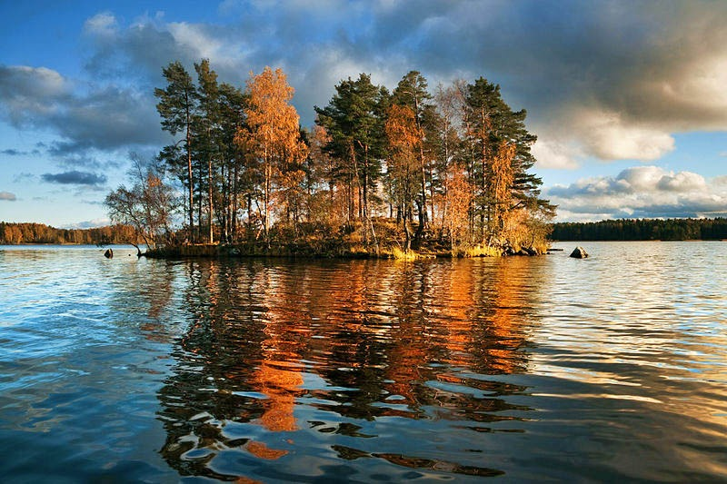

ECOSISTEMA DE AGUA DULCE
CECyTEM Ecatepec
Castañeda Pacheco Melanie Guadalupe
Garcia Cruz Katia Lizbeth
Gutierrez Diaz Fernando Aldahir
Villaneda Camacho Jaqueline

Biomas
Caracteristicas
Flora/Fauna
Clima